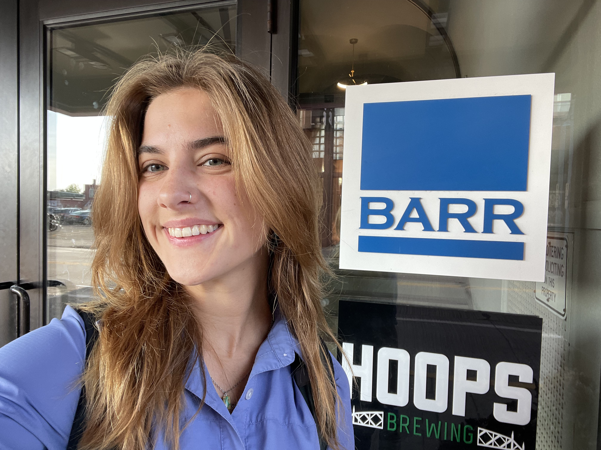
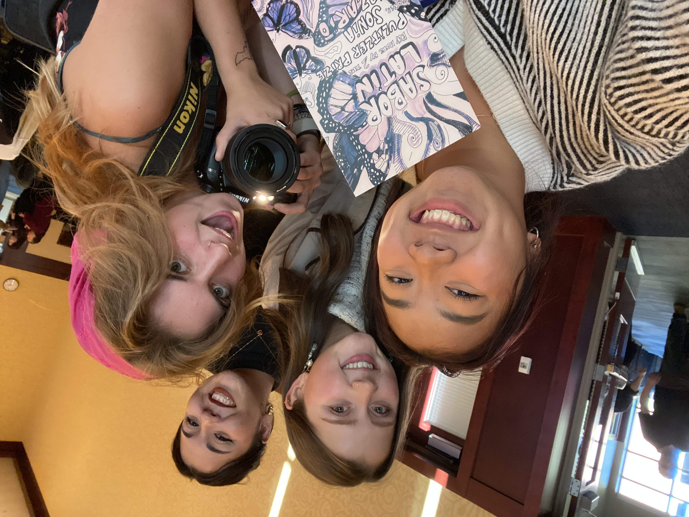

Work Experience
Barr Engineering Co.

Communications Intern
Responsibilities range from writing posts for our Barrometer publication, our internal company blog, and designing and posting content for our social media profiles.
Additionally, I help create internal visual content for BarrTV and social media graphics using InDesign, as well as helping out with brand-refresh resumes.
SKILLS: social media management, graphic design, organizational communications, article writing, InDesign
Design Across Principals
Academic Assistant
In this role, I help facilitate lessons in class through hands-on peer guidance. I help with syllabus and activity planning, as well as managing the class site. I host in-person lab hours and serve as a resource for students who may need additional instruction.
SKILLS: graphic design, Adobe Illustrator, Adobe InDesign, leadership, teaching
Multicultural Student Services

Communications Intern
Curated content for Multicultural Student Services at University of Wisconsin Eau Claire. Tasks ranged from graphic design, such as designing posters and fliers and writing blogposts, to creating art-working and doing event photography.
SKILLS: Canva, Blugold Connect +, graphic design, event photography, visual arts